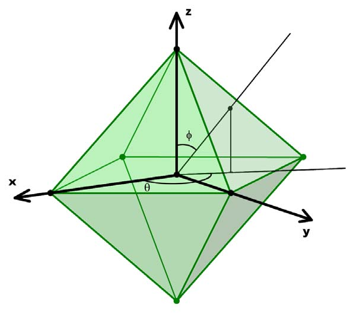

2009 ICPC World Finals · Problem C
Carl the ant is back! When we last left him (Problem A, 2004 World Finals), Carl was a little mixed-up, always taking strange, zigzag paths when traveling. But now, Carl has straightened out his life – literally. He now always takes the straightest, shortest path between any pair of points. This sounds simple, except for one small thing: Carl now spends most of his time on a paperweight in the shape of a regular octahedron. You may recall that an octahedron is one of the five Platonic solids and consists of eight equilateral triangles, as shown in Figure 3.

Carl has an innate (some say in-ant) ability to always take the shortest path when going from any starting point to any destination point on the paperweight. Your job is to verify this by determining the length of the shortest path when given two such points, not necessarily distinct.
The input contains multiple test cases. Each test case consists of four integers θ1, φ1, θ2 and φ2, where 0 ≤ θi < 360 and 0 ≤ φi ≤ 180. The first two are the spherical coordinates of the start point, and the last two are the spherical coordinates of the destination point. As shown in Figure 3, θi is the azimuth and φi is the zenith angle, both of them given in degrees.
The input is terminated by a line containing four negative ones.
The paperweight is fixed for all test cases as follows: the octahedron is centered on the origin and each vertex lies on one of the axes. Every edge is exactly 10 cm long. You should suppose that Carl’s size is zero and ignore any supporting mechanisms that may be necessary to hold the paperweight in the correct position.
For each test case, print the case number (starting with 1) and the length in centimeters of the shortest path from the start point to the destination point, rounded to the nearest thousandth. Follow the format of the sample output.
0 90 90 90 0 90 90 45 0 0 0 180 -1 -1 -1 -1
Case 1: 10.000 Case 2: 8.660 Case 3: 17.321